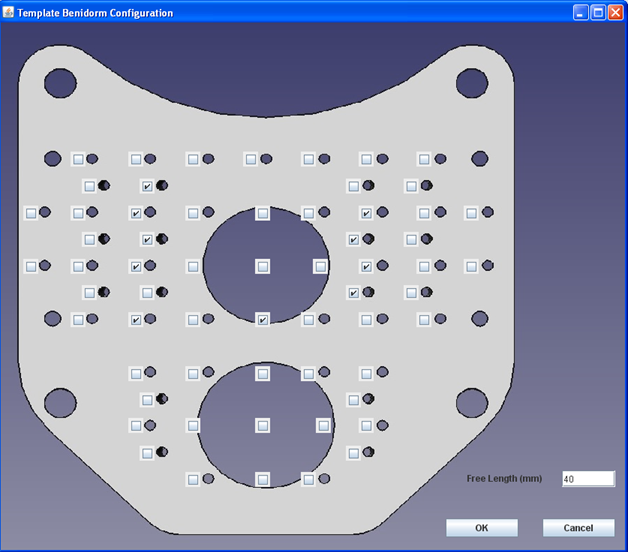

5 Discusión
5.1 A method to incorporate interstitial components into the TPS gynecologic rigid applicator library (Otal2017 publicado en febrero de 2017)
Como se vio en la sección 1.4.3, la reconstrucción basada en bibliotecas de aplicadores no es posible en el caso de la componente intersticial, ya que el aplicador completo puede no considerarse rígido1. Sin embargo, mediante la aplicación del método expuesto en la sección 2.1.5 es factible el uso de las bibliotecas de aplicadores en la reconstrucción de agujas. Por lo tanto, en este trabajo presentamos un método para incluir aplicadores intersticiales en la biblioteca Oncentra TPS para reconstruir dichos aplicadores como un todo con la parte de las agujas incluídas.
En el caso del aplicador Utrecht, la falta de dummies dificulta la reconstrucción de la parte intersticial. Como vimos en la sección 1.4.2, la localización de la tip position de las agujas es esencial para una correcta reconstrucción, pero el surco negro dejado por la aguja en la imagen en T2 no es suficiente para la determinación de la punta de la aguja. Previamente al desarrollo de la biblioteca presentada en este trabajo, se utilizaba el siguiente procedimiento en la reconstrucción del aplicador de Utrecht: Los canales de los catéteres de la sonda intrauterina y de los ovoides se determinan con la ayuda de la dummy descrita por Pérez-Calatayud et al2.Las agujas se reconstruyeron utilizando la metodología descrita en Pérez-Calatayud et al3. El procedimiento consiste en utilizar la información de profundidad de inserción, es decir, la profundidad desde la superficie del ovoide hasta la punta de la aguja, dato proporcionado por el oncólogo radioterapeuta. A continuación, se coloca en el plano reconstruido una regla de software ajustada a la profundidad de inserción y se utiliza para definir los diferentes puntos del catéter, incluidas las puntas de las agujas. Como se ha indicado anteriormente, la profundidad de inserción reproducida mediante la regla del programa informático corresponde a la distancia desde la superficie del ovoide, pero con un desplazamiento de -0,7 cm, para tener en cuenta la distancia máxima entre la fuente y el indexador de 129 cm en el cargador posterior (microSelectron, versión 2 o 3 de Elekta). Este procedimiento es laborioso e implica cierta incertidumbre en el ajuste del punto de salida de la aguja del ovoide, unido a la suposición de que la aguja es perfectamente recta.
En opinion de nuestro grupo, el uso de la biblioteca desarrollada mejora significativamente la eficacia en la reconstrucción. En primer lugar, se selecciona un aplicador virtual configurado en función de las profundidades de las agujas; la posición de la parte intracavitaria se establece sin grandes dificulades con la ayuda de las dummies de la parte intracavitaria y la superficie visible del modelo virtual del aplicador. Una vez establecidos los ovoides, los puntos de salida de las agujas quedan determinados y sólo se necesitan ligeras correcciones de las agujas virtuales para ajustar su posición en función de la señal de vacío que se ve sobre la MRI.
Para la evaluación del incremento en la precisión , se utilizaron ambos métodos de reconstrucción en tres planos diferentes. Uno de los beneficios del nuevo método propuesto se evidencia en la determinación más precisa de la punta para la parte intracavitaria, reduciendo la incertidumbre de 2 mm debida al efecto de volumen parcial por el grosor del corte de la MRI. En el caso de las agujas, la reducción de las incertidumbres debidas al límite del espesor de corte vienen de la más precisa determinación del punto de salida de los ovoides. Las mayores desviaciones en la determinación de la punta de la aguja se deben a la suposición de agujas perfectamente rectas. Utilizando la biblioteca desarrollada, también es posible modificar la curvatura de la aguja virtual para que se ajuste mejor a las trayectorias reales sobre la imagen.
En el caso del TB, que utiliza agujas de titanio, la reconstrucción se basaba normalmente en los artefactos creados por la aguja en las imágenes de las secuencias T1, utilizando el vacío creado como posición de la punta de la aguja. Sin embargo, los tejidos que rodean las agujas pueden presentar heterogeneidades que complican la identificación precisa de estos patrones de artefactos, aumentando dicha dificultad en las secuencias T2, que es la secuencia utilizada para la delimitación del tumor4.
Con el nuevo método presentado aquí, el tiempo necesario para identificar las posiciones de las agujas se reduce considerablemente, por debajo de un 50%. El aplicador virtual con la profundidad de aguja requerida se selecciona en Oncentra y, utilizando las tres bolas de vitamina A como guías, se fija en el estudio de imagen T2 de RMN. A continuación, cada orientación de la aguja se establece utilizando sólo una imagen de plano axial, en la que el vacío en la punta de la aguja de titanio es claramente visible con un buen contraste. Típicamente, sólo dos planos axiales son suficientes para fijar todas las agujas. Las ventajas de este enfoque para la TB son el ahorro de tiempo (como se ha dicho anteriormente por debajo del 50%, promediando el tiempo medido para diferentes casos y diferentes físicos) y la reducción de la probabilidad de identificación errónea del catéter, que puede ser un problema debido al gran número de agujas que se suelen utilizar en la práctica clínica (mínimo 14 agujas).
El método aquí propuesto es específico para el TPS Oncentra y para los aplicadores Elekta Utrecht y TB. No obstante, el método es extensible a otros planificadores que posean librerías de aplicadores y otros aplicadores intersticiales distintos de los utilizados.
5.2 Pre-plan technique feasibility in multi-interstitial/endocavitary perineal gynecological brachytherapy (Rodriguez2017 publicado en octubre 2017)
La aplicación Java desarrollada presenta una interfaz de usuario amigable, como se muestra en la figura 5.1. El usuario puede seleccionar de manera intuitiva las agujas (tanto rectas como divergentes) y la medida que proporciona el oncólogo radioterápico de la longitud libre y por tanto de la profundidad implantada. Con esta información se genera un modelo adaptado para la biblioteca de aplicadores de las agujas y profundidades elegidas. Este modelo se superpone a la MRI previa al implante. Una vez seleccionado el número virtual específico de agujas y profundidades, se realiza un plan virtual en Oncentra TPS y se optimiza según los objetivos de cobertura de los volúmenes a tratar y de la protección de los OAR. La figura 5.2 muestra un caso de pre-plan virtual de RMN y planificación de RMN para dosimetría. En el plan virtual, la plantilla se reconstruye utilizando la biblioteca de un trabajo anterior de los autores5.

El procedimiento de preplanificación virtual presenta ventajas significativas: estimación de la profundidad de las agujas, posición y número de las mismas, optimización de la cobertura del CTV y minimización de las dosis en los órganos de riesgo. “Un implante subóptimo nunca puede transformarse en una aplicación satisfactoria mediante ninguna forma de optimización de la planificación del tratamiento”6. Las correcciones son limitadas en los casos de una dosimetría subóptima debida a un volumen de tratamiento no cubierto. La planificación del tratamiento basada exclusivamente en MR es preferible a otras modalidades de imagen empleadas tradicionalmente, como el CT o los métodos que utilizan registro de imágenes. Las incertidumbres se reducen con la MR exclusiva ya que evitan imprecisiones derivadas de los procedimientos de registro TC-RM1. En consecuencia, ha crecido el interés por desarrollar dispositivos totalmente compatibles con la MR que permitan la inserción y el guiado en tiempo real de los aplicadores de braquiterapia7 . Una alternativa es un plan virtual, o pre-plan, previo al tratamiento que simule la configuración óptima del aplicador. La principal limitación del pre-plan es la ausencia de la parte intracavitaria durante la adquisición de las imágenes anteriores al tratamiento. También la previsión de la divergencia que tomarán las agujas, sobre todo en el caso de agujas no rígidas. La posición del útero varía en la mayoría de las pacientes, siendo recto tras la inserción de la sonda intrauterina. El pre-plan puede realizarse con componente intracavitaria bajo anestesia general8 o paravaginal9. A pesar de un pre-plan virtual, estos autores describen como un sexto de todas las agujas planificadas e implantadas fueron agujas libres, es decir, que no pertenecían a la plantilla debido a la limitación geométrica del anillo8. Las plantillas perineales como la TB evitan las limitaciones anteriores debidas al uso de agujas rígidas, pudiendo añadir un componente intrauterino y cubrir todas las direcciones de extensión del tumor.

Este procedimiento de planificación previa se ha aplicado con éxito en 10 pacientes consecutivas. Se ha logrado una excelente reproducción de la planificación previa virtual. Cuando se trata a pacientes histerectomizadas, sólo hay un pequeño cambio del pre-plan al post-plan. Según nuestra experiencia, en pacientes sin cirugía, los cambios de agujas también son pequeños, tanto en número como en posición tras la inserción (dentro de 5 mm en la punta para una profundidad típica de 160 mm). El mismo oncólogo radioterapeuta experimentado ha realizado la segmentación de los volúmenes tanto en la MR previa a la braquiterapia como en la MR posterior al implante. En nuestra opinión, esta técnica de pre-planificación virtual puede extenderse fácilmente a otros aplicadores multi-intersticiales como MUPIT o Syed, con un número optimizado de agujas y una profundidad adecuada. La planificación previa y la biblioteca permiten un implante fácil y una reconstrucción rápida y eficiente.
5.3 Review on Treatment Planning Systems for Cervix Brachytherapy (Interventional Radiotherapy): Some Desirable and Convenient Practical Aspects to Be Implemented from Radiation Oncologist and Medical Physics Perspectives (Otal2022 publicado en julio 2022)
El principal objetivo de este estudio es proponer mejoras y señalar las lagunas de los TPSs existentes, pero no cuantificar sus consecuencias. Se excluyeron del estudio los paquetes de software externos compatibles con los TPS que podrían ayudar a mejorar los problemas aquí señalados, incluidos los entornos de scripting dentro de los TPS que pueden permitir al usuario programar herramientas personalizadas. Como se ha comentado anteriormente, esta revisión se basa en la experiencia clínica de un grupo de oncólogos radioterápicos y físicos médicos. También se utilizaron demostraciones interactivas proporcionadas por los fabricantes de software e impartidas por especialistas de las empresas proveedoras. Se pidió a estos especialistas que propusieran soluciones a algunos de los retos mediante un cuestionario. Las posibles limitaciones de esta metodología son las siguientes. Se basa en la opinión de expertos y especialistas, por lo que los sesgos personales pueden estar presentes. No obstante, teniendo en cuenta que se trata de un grupo relativamente grande de profesionales que trabajan en diferentes instituciones (diferentes protocolos, instalaciones, formación, etc.), se minimiza el citado sesgo. Otra posible limitación es el hecho de que no todos los expertos hayan utilizado todos los TPS en su práctica clínica, algo inevitable teniendo en cuenta las realidades de la práctica clínica. El uso de cuestionarios también podría limitar el estudio, ya que intrínsecamente tienen sesgos de selección y muestreo que podrían impedir el descubrimiento de situaciones imprevistas.
Existe un software de segmentación que incorpora herramientas más avanzadas para el registro de imágenes que incluyen utilidades para la suma de dosis entre diferentes fracciones. Sería deseable que estas herramientas, o similares, acabaran llegando a los TPS de braquiterapia.
Otras herramientas, esta vez relacionadas con la segmentación de volúmenes clínicos y órganos en riesgo, que sería interesante incorporar a los TPS específicos de braquiterapia automatizarían dicha segmentación mediante redes neuronales convolucionales. Éstas ya se están incorporando al flujo de trabajo clínico en radioterapia, y existen trabajos recientes en la literatura orientados explícitamente al caso del cérvix10–12, aunque el CT es la modalidad de imagen utilizada en estos trabajos.
Un tema apasionante en radioterapia externa es la generación de CT sintéticos a partir de MRI. El objetivo principal de la generación de estos CT es segmentar los tumores y órganos de riesgo en la RM y obtener las densidades electrónicas necesarias para el cálculo de la dosis13. Estos CT sintéticos podrían ser útiles en el caso de la braquiterapia cervical y constituyen hoy en día una línea de investigación todavía por explorar.
La comunidad de usuarios ha desarrollado históricamente herramientas “caseras” que intentan compensar las deficiencias de los TPS y que normalmente no pueden incorporarse al flujo de trabajo del planificador. Un ejemplo comúnmente conocido son las hojas de cálculo. Un entorno de scripting robusto en un lenguaje de alto nivel ayudaría a los usuarios a optimizar sus rutinas de trabajo y también sería una fuente de inspiración para los desarrolladores de nuevos productos para la práctica clínica.
En los últimos años, varios grupos de investigación han estado trabajando en sistemas de seguimiento electromagnético14–16 para comprobar la trayectoria de la fuente de braquiterapia antes de la administración del tratamiento. Uno de los especialistas entrevistado en miembro de un grupo que está desarrollando dicha tecnología. Aunque su finalidad principal es verificar la trayectoria seguida, en el futuro podría utilizarse como herramienta de autorreconstrucción. En la actualidad, no está a disposición de los usuarios.
Por último, recientemente se han publicado algunos estudios que investigan la viabilidad de algoritmos basados en aprendizaje profundo para la reconstrucción semiautomatizada de catéteres intersticiales durante la HDR ginecológica basada en MR17.
5.4 Discusión general
El orden cronológico de la discusión de cada una de las publicaciones incluídas en este texto obedece, además de a la lógica , a la intención de justificar el por qué de la aparición de cada una de ellas.
La participación en dos publicaciones previas,por un lado la de Rodriguez et al18 y por otra la de Richart et al19 son el punto de partida del primero de los artículos publicados. En el primero de ellos, se presenta el Template Benidorm (TB) sección 2.1.4. Va a ser diseñado para tumores ginecológicos, con un enfoque especial en el carcinoma de cérvix localmente avanzado. Este dispositivo permite la combinación de radioterapia intracavitaria y agujas intersticiales compatibles con resonancia magnética (MRI). El diseño del aplicador aborda las limitaciones de los aplicadores comerciales existentes, como la incapacidad del componente intracavitario para llegar profundamente al cuello uterino y la incompatibilidad con MRI. Su diseño se orienta al tratamiento de carcinomas cervicales avanzados con invasión parametrial voluminosa, enfermedad primaria extensa que responde mal a la radioterapia externa, y para casos con invasión paravaginal extensa. Es precisamente su diseño orientado a su uso exclusivo con MRI lo que originó la segunda de las publicaciones. En la publicación de Richart et al, se abordan los problemas de reconstrucción de agujas de titanio en el contexto del uso del TB para implantes intersticiales en radioterapia.
Los implantes intersticiales a menudo utilizan agujas de titanio que son difíciles de reconstruir con precisión en imágenes de resonancia magnética (MRI). Para resolver este problema, se propone un método que utiliza pequeños marcadores vitamina A fácilmente visibles en imágenes de MRI para ayudar en la reconstrucción de las agujas. Este método se aplica tanto en secuencias T1 como T2 y se evaluó su consistencia mediante la reconstrucción de varios implantes por dos físicos médicos con experiencia. Los resultados mostraron diferencias de posicionamiento menores a 1 mm en todos los casos. Además, este método permite usar solo la secuencia T2 para contorneo o reconstrucción. A raiz del atículo de Richart et al y uniendo las soluciones expuestas en él con la librería de aplicadores del TPS Oncentra el resultado es la publicación Otal20175. En él como hemos visto, además de modificar el modelo de aplicador Utrecht de la biblioteca para añadir la parte instersticial, se introduce un aplicador nuevo en la misma, el Template Benidorm.
La inclusión del Template Benidorm en la biblioteca de Oncentra sugiere la posibilidad de utilizar el modelo virtual de dicho aplicador como una manera de diseñar la carga de agujas y la profundidad de inserción aprovechando la MR previa al tratamiento que ya se hacía con el mismo propósito pero confiando en la experiencia del oncólogo que, después del visionado de la MRI, determinaba la configuración del template el día del implante. La utilización de el modelo virtual dota al equipo formado por el físico médico y el oncólogo de una herramienta más sofisticada para la realización de un implante adecuado.
Paralelamente a la publicación Otal2017 y Rodriguez2017, se enviaron trabajos al 2016 World Congress of Brachytherapy (San Francisco, CA) y al 5º Congreso Conjunto 21 SEFM /16 SEPR (Girona). En este último, el póster de presentación correspondiente a Rodriguez2017 fue seleccionado como finalista para el premio al mejor póster del congreso, seleccionado por la comité científico de Sociedad Española de Física Médica de dicho congreso, lo que es indicativo del interés que despiertó la idea.
Por otro lado, la idea de las bolas de vitamina A como marcadores expuesta en la publicación de Richart et al.19 va a ser explorada en trabajos posteriores. En la publicación de Otal et al.5 se describe la inclusión en el modelo de la biblioteca de aplicadores del TPS Sagiplan (Eckert & Ziegler BEBIG, Berlin, Alemania) de tres marcadores esféricos de vitamina A. La posición precisa de las esferas con respecto a la geometría del aplicador es conocida ya que se diseñaron unos soportes para dichas esferas que se añadieron al modelo (figura 5.3 (a)). Dichos soportes se fabricaron con el uso de una impresora 3D hechas de ácido poliláctido (PLA). La colocación de los accesorios en el aplicador es sencilla y no afecta la integridad ni otras características del producto. Las esferas son visibles en la MRI y permiten el posicionamiento del aplicador sobre la imagen (figura 5.3 (b)).

Esta idea fue presentada, además de en el 36º congreso de la European Society for Therapeutic Radiology and Oncology (ESTRO) celebrado en Viena, en el congreso conjunto 13º Congreso Argentino de Física Médica/7º Congreso Latinoamericano de Física Médica, celebrado en Villa Carlos Paz (Córdoba, Argentina), donde fue galardonado como mejor presentación póster de dicho congreso.
En 2018 Richart et al.20 publicaron un artículo de revisión en donde se intentó recopilar el estado del arte de la reconstrucción de aplicadores en braquiterapia de cérvix. Entre otras muchas fueron incluidas las descritas en lo párrafos anteriores de la sección.
Continuando con la exploración de las posibilidades de las bibliotecas de aplicadores, en 2019 son presentados sendos trabajos en el 61º congreso de la American Association of Physicist in Medicine (AAPM), celebrado en San Antonio (Texas, EEUU). El objetivo de los trabajos presentados es buscar métodos que conviertan aplicadores formados por tres canales correspondientes a la sonda intrauterina y a los ovoides en un solo aplicador que se pueda considerar en la biblioteca de aplicadores como rígido. el aplicador Utrecht de Elekta, un aplicador plástico, y el segundo aborda la reconstrucción de un aplicador compatible con RM pero construido en titanio el aplicador Fletcher (Mick, Eckert&Ziegler, Germany).
En el trabajo de Otal2019_p et al.21, el aplicador objetivo es el modelo Utrecht de la compañía Elekta (Estocolmo, Suecia), un aplicador plástico. Utilizando las dummies del artículo de Pérez-Calatayud et al.22 se obtienen las trayectorias de las fuentes en los tres canales intracavitarios. Con esa información y por un método de mínimos cuadrados se obtiene un modelo geométrico del aplicador adaptado al implante, con lo que el aplicador podrá ser colocado sobre la MRI como si fuese un aplicador de una sola pieza.
Se aplicó el método expuesto a 14 pacientes con caracter retrospectivo. Las distancias entre los puntos en la imagen y los calculados se muestra en el histograma de la figura 5.4. En el caso de los ovoides, las diferencias están por debajo del milímetro, no así en el caso de la sonda intrauterina, en el que no se aprecian tan buenos resultados. El peor resultado para la sonda intrauterina es debido a la menor curvatura de la misma lo que hace que en el ajuste exista una indeterminación mayor que en el caso de los ovoides los cuales forman un ángulo que minimiza la incertidumbre en la dirección cráneo-caudal. Este método fue presentado en el 6º Congreso Conjunto 22 SEFM /17 SEPR (Burgos) y galardonado con el primer premio modalidad póster de la SEFM.
El método descrito en Otal2019_p et al. es de uso exclusivo para aplicadores plásticos, ya que las dummies del canal son visibles en la MRI. No así para aplicadores metálicos en donde una dummy de ese tipo no es viable. En el trabajo de Otal2019_m et al.23, se propone un método diferente adaptado a los aplicadores metálicos, concretamente en el aplicador Fletcher (Mick, Eckert&Ziegler, Germany). Dicho método se basa en obtener medidas de distancias en el aplicador ya implantado y mediante esta parametrización obtener un modelo virtual para la biblioteca del aplicador completo y tratarlo como si fuese rígido, al igual que se hizo para el aplicador Utrecht (figura 5.5).

Posteriormente, en el año 2021 Otal2021 et al.24 presentaron en la reunión de la American Brachytherapy Society (ABS) una herramienta para facilitar y ampliar la reconstrucción de apicadores plásticos sobre MRI, nuevamente sobre el aplicador Utrecht. Dicha herramienta está desarrollada sobre la plataforma 3DSlicer25 y además de las soluciones aportadas en Otal2019_p et al., ha sido añadida una herramienta que permite la reconstrucción de la parte intersticial a partir de la parte intracavitaria. Las ideas principales para la construcción de la herramienta son las aportadas en el artículo de Otal2017.
Una vez posicionada la parte intracavitaria se seleccionan en un desplegable las agujas colocadas en el implante y se introduce el valor de la profundidad de cada una de ellas, valor registrado por el responsable del implante (figura 5.6 (a)). El punto de salida de cada una de las agujas es conocido de la parte intracavitaria, esto unido a los puntos registrados sobre la imagen de cada una de las agujas es ajustado a un spline polinómico que tiene la longitud aportada anteriormente (figura 5.6 (b)).
La herramienta desarrollada es ajena a la biblioteca de aplicadores de Oncentra, ya que contiene los modelos tridimensionales del aplicador en ella y por tanto es posible introducirlo en una versión de Oncentra sin la licencia de la biblioteca, la cual no viene incluída con el paquete básico. La salida que aporta son las coordenadas de cada punto de parada de la fuente para todos los canales del aplicador, tanto los intracavitarios como los intersticiales. Dichos valores se pueden introducir en el planificador a mano, lo cual es bastante tedioso y con peligro de cometer errores de transcripción o diseñar algún procedimiento de exportación de ficheros que permita al planificador importarlo de manera automática. El procedimiento completo de reconstrucción se puede visionar en la plataforma de vídeos Youtube. Además de como herramienta de reconstrucción, también puede ser utilizada como herramienta de anotación para que los ficheros resultantes puedan ser útiles como datos para el entrenamiento de algoritmos de inteligencia artificial que posibiliten el desarrollo de soluciones de autoreconstrucción.
El desarrollo de todas las innovaciones expuestas previamente unidas a la inquietud sobre las carencias de los TPSs actuales de un grupo de profesionales, físicos médicos y oncólogos radioterápicos, con sólida experiencia en el tratamiento de tumores de cérvix en braquiterapia intersticial con MRI exclusiva, fueron el germen de la publicación Otal2022.